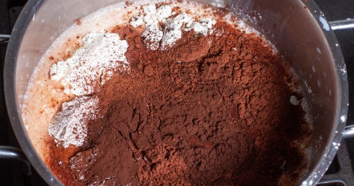
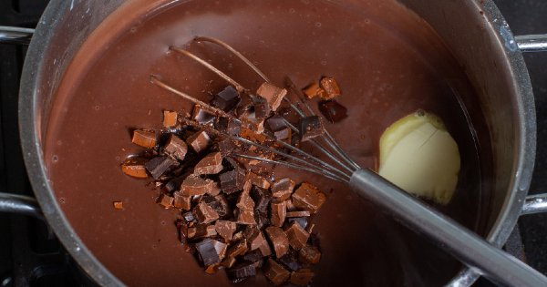
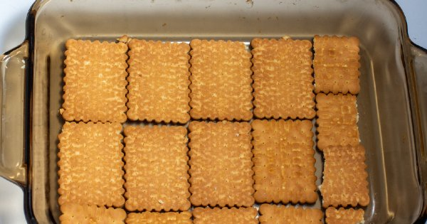
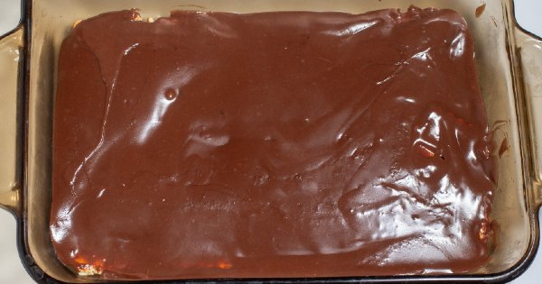
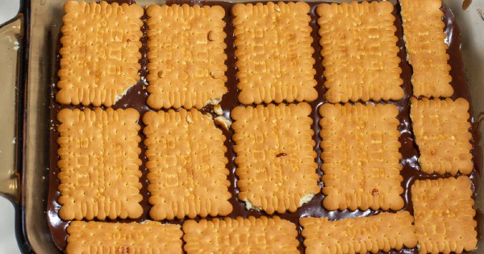
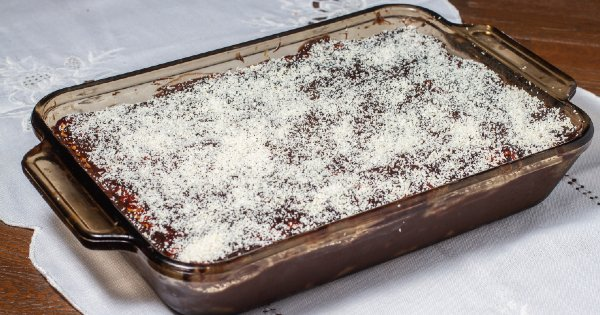
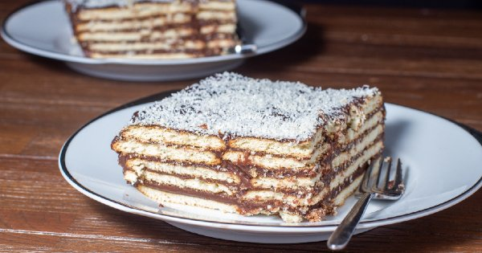

Çocukluğumuzdaki Gibi: Petibörlü Bisküvili Pasta Tarifi
anasayfa
tarif gönder
iletişim

Petibörlü Bisküvili Pasta Tarifi İçin Malzemeler
1 litre süt
2 tepeleme yemek kaşığı un
3 yemek kaşığı kakao
1,1 yemek kaşığı (tepeleme)tereyağı
Petibörlü Bisküvili Pasta Tarifi Nasıl Yapılır?
'Aşama 1': Kremasını hazırlamak için, derin
bir tencereye sütü alın. Üstüne unu, nişastayı,
şekeri ve kakaoyu ekleyip bir tel çırpıcı yardımıyla güzelce
karıştırın.

'Aşama 2': Tencerenin altını açın ve sürekli
karıştırarak, kaynamaya başlayıp, koyulana dek pişirin.

'Aşama 3': Göz göz kaynayıp, kıvamı koyulaşınca
içine vanilyayı ekleyin karıştırın ve altını kapatın.

'Aşama 4': Altını kapattıktan sonra içine
çikolatayı ve tereyağını ekleyip, tereyağı ve çikolata
eriyene dek güzelce karıştırın.

'Aşama 5': Isıya dayanıklı kare bir kaba bir sıra
petibör bisküvileri dizin, üstüne hazırladığınız kremadan bir
kat dökün, bisküvileri örtecek şekilde.Üstüne tekrar bir
sıra bisküvi dizin ve bu şekilde tüm krema bitene kadar
devam edin.

'Aşama 6': En üst kata kremayı dökün ve ılıklaştıktan
sonra üstüne Hindistan cevizi serpin.

'Aşama 7': Buzdolabına kaldırın ve 2‐3 saat
dinlendirdikten sonra dilimleyerek servis edin. Afiyetler
olsun!

©her hakkı saklıdır®